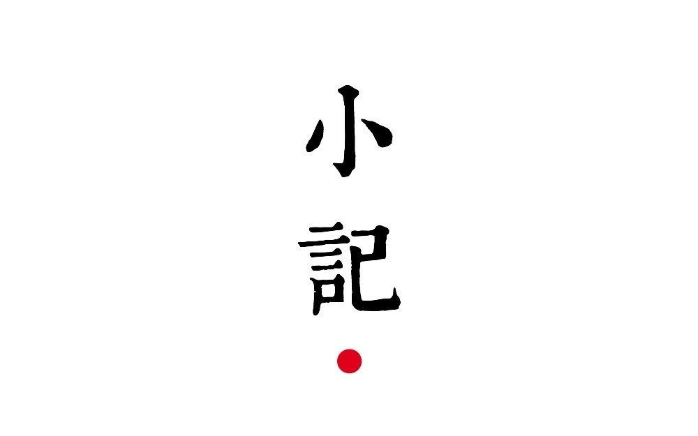

找准了方向，掌握了方法，离真实的营销依旧有很多距离。如何吸引你的用户，让他们走向你布下的“甜蜜陷阱”来下载你的产品，是最艺术的一步。
在社交媒体时代，我们获得了大量一对多展示的机会，这本来这是一件好事，但当所有人都有机会随时向用户展示东西的时候，用户就进入了被信息轰炸后的麻木状态。
文案就是你写在广告上的文字。
需要记住的第一件事情就是，所有文案上的元素，都是为了一个目的 —— 让用户阅读你的第一句话。
我们先来看一下文案一
用竖排来写日记

小记 提供了竖排的编写功能，能够展示优雅的竖排效果。
让你找到写诗的感觉，并且可以生成图片分享到朋友圈。
快来下载吧。
文案一是常见的推荐方式，你经常可以看到这样的微博，高喊着我们提供了什么功能，快来下载吧，然后留下了一个下载链接。
这种方式不仅不会产生用户的情感共鸣，而且还会成为用户自动过滤的内容，请接着看 小记 实际使用的文案。
文案二
那年我们都想做诗人
小记 选了三首诗。
《季风气候》和《怎么不忧伤》，都来自我的一个发小，可能你也有这样一个曾经一起成长的朋友，然后下落不明。
人的理想并不是一成不变的，特别是青春期的时候，季风气候是他 2006 年写的，那年我们初二，那年我们都想做诗人。
他用铅笔写在了一张单薄的作业纸上，配合着歪扭的字体，连垃圾桶都嫌弃的做工，却洋溢着不羁的文采。其实那时他并不知道应该送给谁，他只是在想象那么一个姑娘，还记得那天我拜读之后，他回味良久，说道「我必须送给一个姑娘」。
于是他送给了班里那个肌肤像白玉一样的姑娘，戴着眼镜，文静，单纯。就是那个我没泡上的姑娘，被他这首诗感动了。
当我回想起下着大雪的那个下午，他告诉我他们在一把伞里牵了手，我不得不承认，我败给了一张作业纸。
季风气候
臧甲彬
—
天空怎么灰了
我还没发觉
这落日的景色
送你的珊瑚海贝壳
攥久了像哭过
来自西西伯利亚的海风
吹过我的裤褶
这一刻
记忆开始发涩
凌乱的凋谢在坏死的脑前叶
“爱我好么”
—
“不可能的”
呵
拒绝不带任何罗嗦
我小心的将它剪切
然后在伤口粘贴
等待海风吹干最后一抹
体温的余热
—
没道理
是一枚太平洋的暖湿空气
飘散了我们的心
在青春的墓地
就这样平行下去
我估计我们的轨迹
差不多一米
我酝酿给这个距离
下个定义
叫做
爱你
或许这个世界上，我是最后一个拥有这首诗全文的。
2008 年，我们上了高中，分开到了不同的学校，在那之后，他得了抑郁症。
一切开始变得无力挽回，我们开始活在不同的世界。但他的才华依然在用他特有的方式横空着。
今年 2 月份的时候，我再也联系不上他，我不知道他去了哪里，也不知道他的亲人去了哪里，甚至没有人知道他去了哪里。
或许这就是他的忧伤
叫我怎么不忧伤
臧甲彬
—
那个男生宽肩膀 姑娘看的眼放光 可怜我这男朋友 空有一副热心肠 热心肠啊热心肠 我的姑娘不见了 叫我怎么不忧伤
—
小时放肆真快活
打架撒谎耍混账
天黑之后跑回家
家里有我亲爹娘
亲爹娘啊亲爹娘
我的童年不见了
叫我怎么不忧伤
>
—
欢喜少来忧愁多
人生本来就这样
寂寞之人仍在此
临窗独唱明月光
明月光啊明月光
我的快乐不见了
叫我怎么不忧伤
在给 小记 选择例诗的时候，我脑中浮现了他的这两首诗。
他从未有机会出版他的诗，所以我把他的诗放进 小记 里，让更多的人看到，让无论此刻在哪里的他看到。
第三首是最后选定的，圣经里的创世纪篇。
所有人都知道这两句——
上帝说，要有光，于是，便有了光。
有时候听着音乐，呆在一个寂静的地方，有些人会涌进你的脑海，可能他曾陪着你成长，可能她是一个守候在你背后的姑娘。这个世界虽有诸多纷扰，但是只有彼此之间在岁月里留下的印记才会让你恍然大悟：自己是谁，从哪里来，到哪里去。
文案二中，从标题和题图开始，这个文案都是特别的，口语化的独白，青涩的措辞，勾起了你对那些青葱岁月的回忆，用一片对友人的记忆把 小记 的概念塑造起来。
对于这样一款产品来说，谈论功能，界面，都不能让其脱颖而出，小记 所代表的记忆符号才能真正给这款产品打上一个特殊的烙印。
而最终从用户的反馈和极高的下载转化率，也证明了这篇文案的成功。
文案，从用户注意了你的第一句话开始，就应该勾起他们的好奇心，像坐滑梯一样，一路读下去，直到最后。利用你的文字构造出一个情绪氛围，让最后的下载成为一件不得不做的事情。
文案一中附带的下载链接要经过浏览器多次跳转，难以点按，并且在微信或者其他平台，还可能遭遇跳转拦截。
二维码的形式可以放置一个优化后的可直接跳转 AppStore 的链接，并且更加人性化。
在文案里，非常有必要借助各种技巧来打造一个完美的下载环境。